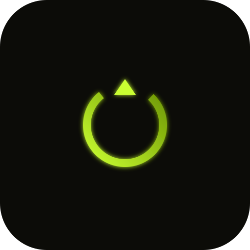

1Ask
Describe it in plain language
"Add a panel that watches my error logs and pings me." No SDK boilerplate, no config files to hand-write.
› add a log-watcher panel

Neon Pilot v1.4 powered by PiPowered by the Pi Coding Agent
Neon Pilot wraps the Pi Coding Agent in a durable macOS desktop app. Ask once, and your agent ships new commands, tools, pages, and workbench panels as first-class extensions. Bring any provider. Keep everything on your machine.
$ curl -fsSL neonpilot.net/install.sh | bash -s -- --bootstrap

How self-extension works
"Add a panel that watches my error logs and pings me." No SDK boilerplate, no config files to hand-write.
› add a log-watcher panel
Commands, tools, settings, pages, panels, and workbench panes are generated against the same authoring API as core.
writing log-watcher/
├─ page.tsx
├─ panel.tsx
├─ tool.ts
└─ settings.ts
No rebuild, no restart, no marketplace. The extension appears in the sidebar and persists across sessions.
loaded · added to sidebar
What ships in the box
Extensions
Scheduled, daemon-backed runs with visible state and native macOS alerts.
Git-backed durable notes, skills, and instruction files that sync across machines.
Every extension contributes commands, pages, and tools to one fast launcher.
Run the same prompt across providers side by side and compare latency and cost.
Spawn scoped workers that report back into the main transcript when they finish.
Token, latency, and cost charts for every run: local, private, never phoned home.
Provider support
Sign in with a Claude Pro or Max subscription, or bring an API key. Subscription use draws from extra usage billed per token, not your plan limits.
Connect via
Configure
# Primary: configure in the app
Settings › Providers › Anthropic
# Or from the CLI
$ neon-pilot bootstrap provider set-key anthropic
OAuth tokens and keys are stored locally and never leave your machine.


MIT licensed and local-first. Bring your own provider via key, subscription, or a local model.